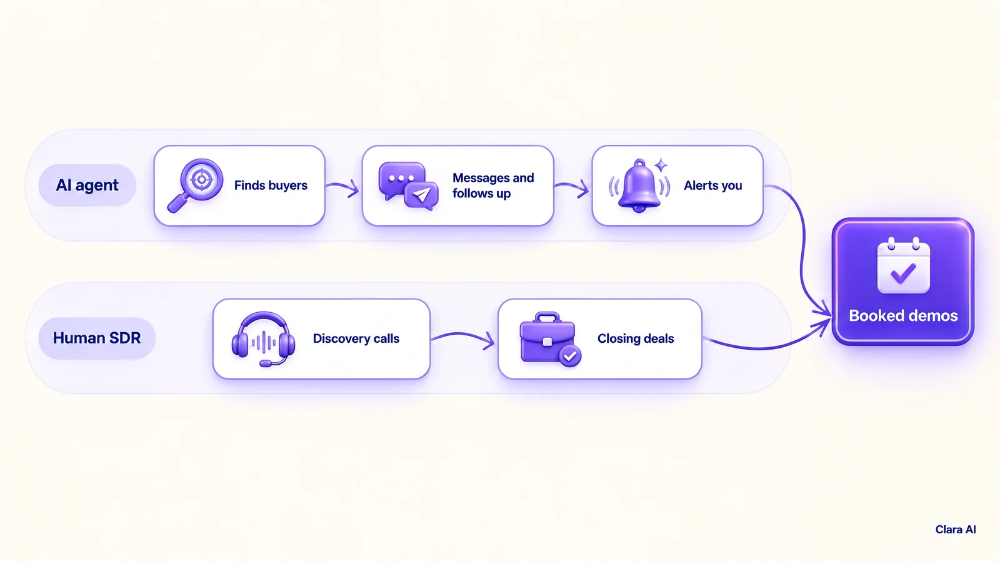

A LinkedIn outreach agent and an SDR do the same first job: find the right buyers, start a conversation and pass warm replies to a closer. The agent does it every day at a steady pace with no ramp time. An SDR can also run discovery calls and handle nuance. For most small and mid-size B2B teams, the best answer is the agent for daily prospecting and a human for the calls.
The question usually comes up at the same moment. Pipeline is thin, the founder has stopped sending messages because of product work, and someone says "we should hire an SDR." That is a fair idea. It is also a slow and costly one if the real gap is simply daily consistency.
A good SDR spends the morning on research and messages and the afternoon on replies, follow-ups and calls. Most of that work is repeatable:
The first four steps are non-physical work done in a browser. An agent can run them. The last step, and the conversation behind it, is where a person earns their pay.
| What matters | AI LinkedIn Outreach Agent | SDR hire |
|---|---|---|
| Time to start | First demo within 7 days | Hiring, notice period and learning time |
| Daily consistency | Works every day at a set pace | Working days, minus leave and sick days |
| Personal messages | Written for each person from your approved facts | Yes, when they have time |
| Reply sorting | Same day, with WhatsApp alerts to you | Done by the SDR |
| Discovery calls and closing | No, a human does this | Yes |
| Judgment on odd cases | Hands over to a person | Strong |
| Management time | Weekly report, you approve direction | Coaching, targets and one-to-ones |
| If it does not work | Change the plan or stop the monthly service | Notice period and a restart |

An agent is not always the answer. Hire a person first if:
Even then, an agent can keep LinkedIn running while the new hire ramps up, so the pipeline does not go quiet during those first weeks.
An agent fits when the gap is daily, repeatable prospecting rather than closing skill:
We have written more on this in our guides to a LinkedIn outreach agent for B2B SaaS and an AI agent for LinkedIn lead generation.
It depends on how the agent behaves. LinkedIn's User Agreement restricts automated methods of adding connections or sending messages that act against its rules, so a tool that blasts hundreds of copy-paste notes is a real risk. A well-run agent copies a careful person instead. It keeps daily volume modest, personalises each note, pauses between actions and stops the moment someone replies. Our comparison of LinkedIn automation and a LinkedIn agency goes deeper on this.
The best set-up gives each side the work it is good at:
This is the same pattern we describe in AI agents vs hiring for office work: a person who works in a browser and reports on WhatsApp can often be matched by an agent that does the same, while people keep the judgment calls.
We only share dated, real numbers. As of 21 Oct 2026, the agent had reached 345 people for Haique Surfaces, with 107 accepting and 14 replying. For Sanjeet Ray, a business coach, October 2026 brought 149 invites, 43 connections, 12 conversations and 3 warm leads. Your numbers will depend on your offer, your market and how tight the target list is.
Whether you hire or use an agent, judge it over a full month on the same four numbers: people reached, acceptances, replies from real buyers and booked calls. Do not judge on activity alone.
Clara AI is a 14-person AI team that builds and runs agents for 19 businesses. We set up the AI LinkedIn Outreach Agent for you and run it, so you do not need a tech team. A person on our team checks the work, and replies reach you on WhatsApp. Tell us what you sell and who you want to reach, and we aim to show you a first demo within 7 days. If search traffic matters too, our AI SEO Agent publishes content daily.